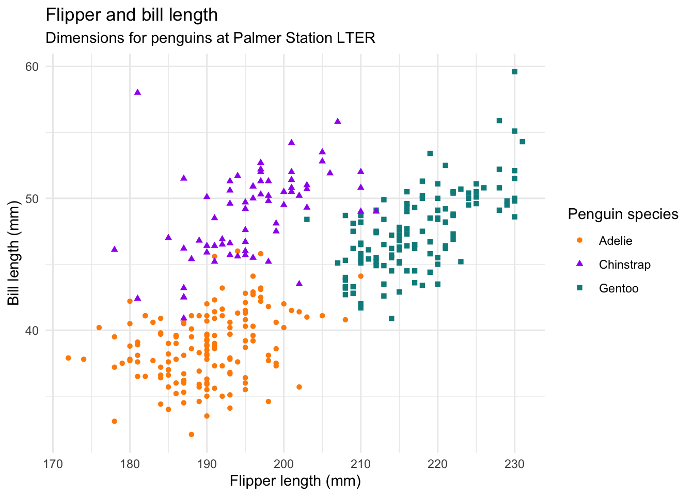

library(tidyverse)
library(palmerpenguins)Reproducible penguins
Meet Quarto
Quarto enables you to weave together content and executable code into a finished document. To learn more about Quarto see https://quarto.org.
Meet the penguins
The penguins data from the palmerpenguins package contains size measurements for a bunch of penguins from three species observed on three islands in the Palmer Archipelago, Antarctica.

Data
Let’s take a peek at the data.
glimpse(penguins)Rows: 344
Columns: 8
$ species <fct> Adelie, Adelie, Adelie, Adelie, Adelie, Adelie, Adel…
$ island <fct> Torgersen, Torgersen, Torgersen, Torgersen, Torgerse…
$ bill_length_mm <dbl> 39.1, 39.5, 40.3, NA, 36.7, 39.3, 38.9, 39.2, 34.1, …
$ bill_depth_mm <dbl> 18.7, 17.4, 18.0, NA, 19.3, 20.6, 17.8, 19.6, 18.1, …
$ flipper_length_mm <int> 181, 186, 195, NA, 193, 190, 181, 195, 193, 190, 186…
$ body_mass_g <int> 3750, 3800, 3250, NA, 3450, 3650, 3625, 4675, 3475, …
$ sex <fct> male, female, female, NA, female, male, female, male…
$ year <int> 2007, 2007, 2007, 2007, 2007, 2007, 2007, 2007, 2007…Visualization
Below is a visualization of the data.
ggplot(
penguins,
aes(x = flipper_length_mm, y = bill_length_mm)
) +
geom_point(aes(color = species, shape = species)) +
scale_color_manual(values = c("darkorange", "purple", "cyan4")) +
labs(
title = "Flipper and bill length",
subtitle = "Dimensions for penguins at Palmer Station LTER",
x = "Flipper length (mm)", y = "Bill length (mm)",
color = "Penguin species", shape = "Penguin species"
) +
theme_minimal()